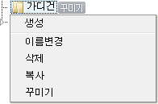

{ #layout_header }	

<script type="text/javascript" src="/app/javascript/plugin/editor/js/editor_loader.js"></script>
<script type="text/javascript" src="/app/javascript/plugin/editor/js/daum_editor_loader.js?dummy={=date('YmdH')}"></script>
<script type="text/javascript" src="/app/javascript/plugin/jstree/jquery.jstree.js"></script>
<script type="text/javascript" src="/app/javascript/plugin/jquery.colorpicker.min.js"></script>
<script type="text/javascript" src="/app/javascript/plugin/custom-color-picker.js"></script>
<script type="text/javascript" src="/app/javascript/plugin/custom-font-decoration.js"></script>
<script type="text/javascript" src="/app/javascript/js/base64.js"></script>
<script type="text/javascript">
	var categoryDefault = {=categoryDefault};
	var categoryUrl 	= gl_protocol+"{_SERVER.HTTP_HOST}/goods/catalog?code=";
</script>
<script type="text/javascript" src="/app/javascript/plugin/jstree/category_jstree.js?v={=date('YmdHis')}"></script>
<script type="text/javascript" src="/app/javascript/js/admin/category.js?v={=date('Ymd')}"></script>
<!-- 페이지 타이틀 바 : 시작 -->
<form target="actionFrame">
<input type="hidden" name="categoryCode" class='categoryCode' value="" />
<input type="hidden" name="mode" value="" />
<div id="page-title-bar-area">
	<div id="page-title-bar">

		<!-- 타이틀 -->
		<div class="page-title">
			<h2>카테고리</h2>
		</div>

		<ul class="page-buttons-left">
			<li></li>
		</ul>
		
		<ul class="page-buttons-right hide">
			<li><button type="button" class="resp_btn v3 size_L" id="viewCategory">스킨 바로가기</button></li>
			<li><button type="button" onclick="categorySettingFormSubmit()" class='resp_btn active size_L'>저장<span class="arrowright"></span></button></li>
		</ul>
	</div>
</div>
<!-- 페이지 타이틀 바 : 끝 -->

<!-- 서브메뉴 바디 : 시작-->
<div class="contents_dvs v2">
	<div class="catagroy_tree_list">
		<div class="item-title">
			<span>카테고리 설정</span>
			<span id="mmenu" class='fr'>
				<input type="button" id="add_folder" class='resp_btn active' value='추가'/>
				<input type="button" id="remove_button" class='resp_btn v3' value='삭제'/>
				<input type="button" id="remove" value="-" style="display:none; float:left;"/>
			</span>	
		</div>

		<table width="100%" class="info-table-style mt0">
			<col />
			<tr>
				<td class="its-td" style="background:rgba(255,255,238,0.9);width:310px;padding:0px;">	
					<div id="tree" class="tree" style="height:500px;overflow:auto; padding:10px 5px;"></div>
					<div style="height:30px; text-align:center;display:none;">
						<input type="button" style='width:170px; height:24px; margin:5px auto;' value="reconstruct" onclick="$.get('./tree?reconstruct', function () { $('#tree').jstree('refresh',-1); });" />
						<input type="button" style='width:170px; height:24px; margin:5px auto;' id="analyze" value="analyze" onclick="$('#alog').load('./tree?analyze');" />
						<input type="button" style='width:170px; height:24px; margin:5px auto;' value="refresh" onclick="$('#tree').jstree('refresh',-1);" />
					</div>
					<div id='alog' style="display:none;"></div>
				</td>
			</tr>
		</table>
		<!--
		<table class="help-table-style" width="100%" style="margin-top:0px">
			<tr><td colspan="2" style="height:30px; background:#7498b3; color:#ffffff; padding-left:10px;"> <b>카테고리 기능 안내</b></td></tr>
			<tr>
				<td class="help-th" width="76px"><span class="btn small cyanblue"><input type="button" value="생성" style="display:block; "/></span></td>
				<td class="help-td">카테고리를 생성합니다.</td>
			</tr>
			<tr>
				<td class="help-th"><span class="btn small red"><input type="button" value="삭제" style="display:block; "/></span></td>
				<td class="help-td">카테고리를 삭제합니다.</td>
			</tr>
			<tr>
				<td class="help-th"></td>
				<td class="help-td">해당 카테고리의 정보를 확인할 수 있습니다.</td>
			</tr>
			<tr>
				<td class="help-th"></td>
				<td class="help-td">선택된 카테고리에서 마우스로 드래그하여 순서를 조정할 수 있습니다.</td>
			</tr>-->
<!-- 			<tr> -->
<!-- 				<td class="help-th"></td> -->
<!-- 				<td class="help-td" style="height:180px;">선택 카테고리에서 오른쪽마우스를 클릭하면 아래와 같이 퀵매뉴가 나타납니다.<br/> -->
<!-- 				<br/>&nbsp;</td> -->
<!-- 			</tr> -->
		<!--</table>
			-->
	</div>	
		
	<div class="catagroy_setting_content">
		<table width="100%" id="categoryInfoFirst">
			<col />	
			<tr>
				<th class="its-th" style="height:20px; padding-left:15px;">카테고리 정보</th>
			</tr>
			<tbody>
			<tr>				
				<td class="its-td">
					<span class="btn small cyanblue"><input type="button" value="생성"/></span> 버튼을 클릭하여 카테고리를 생성할 수 있습니다.
				</td>
			</tr>
			</tbody>
		</table>
		
		<div id="categorySettingContainer"></div>
	</div>
</div>

<!--{ ? groups }-->
<div id="setGroupsPopup" class="hide">
<!--{ @ groups }-->
<div style="float:left;padding-right:5px;">
	<label><input type="checkbox" name="memberGroup" value="{.group_seq}" class="line" >{.group_name}</label>
</div>
<!--{ / }-->
</div>
<!--{ / }-->

</form>

<!-- 서브메뉴 바디 : 끝 -->

<script>
viewCategoryInfo(categoryDefault);
</script>
{ #layout_footer }